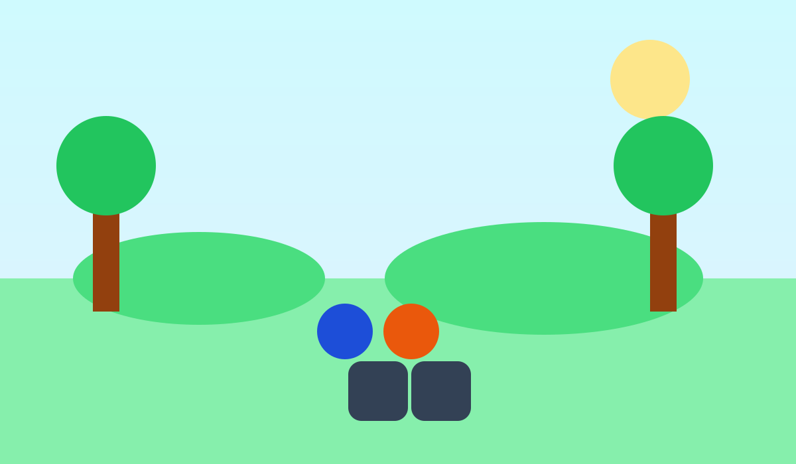

5 Simple Ways to Start Your Digital Detox Today
Quick practical actions to reduce digital noise and regain calm in your daily routine.
Read PostDigital Detox Blog
Explore tips, insights, and practical strategies to help you reduce screen time and live more mindfully.

Quick practical actions to reduce digital noise and regain calm in your daily routine.
Read Post
Understand the connection between screens and sleep quality, then build evening habits that work.
Read Post
Set clear personal limits around notifications, work messages, and social apps without guilt.
Read Post
Discover how offline time improves mood, relationships, and the quality of your attention.
Read Post
Use focused work blocks and intentional check-in windows to get more done with less stress.
Read PostOur blog is here to guide and inspire you on your journey toward a more balanced, present, and fulfilling life - one mindful moment at a time.